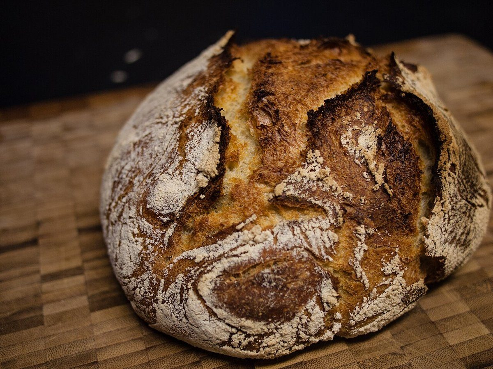
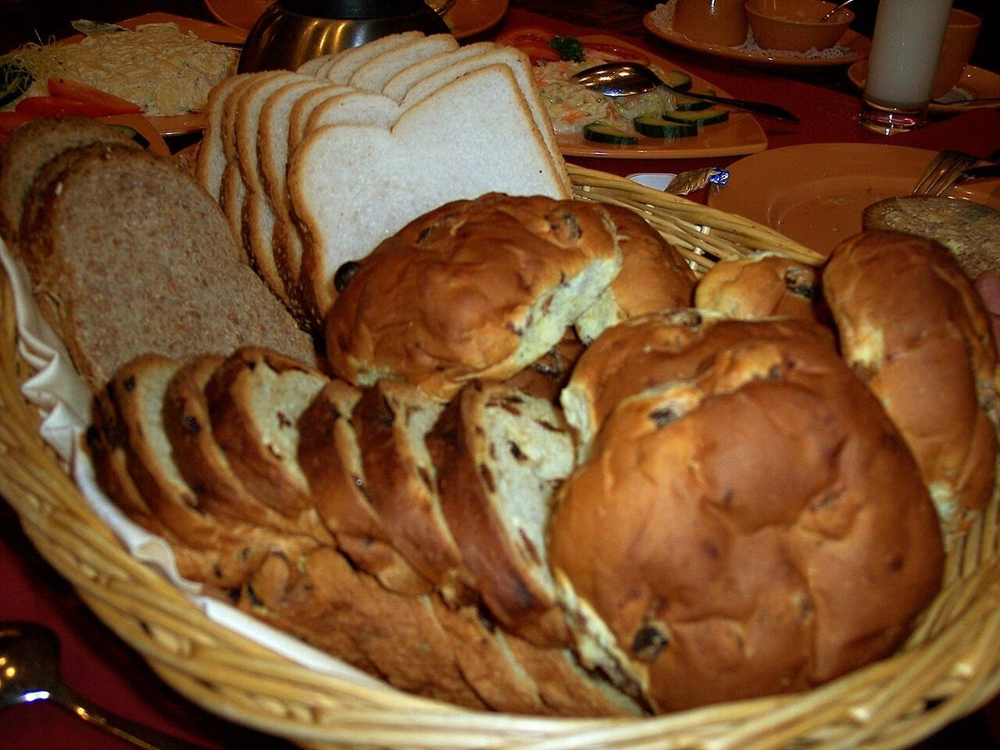
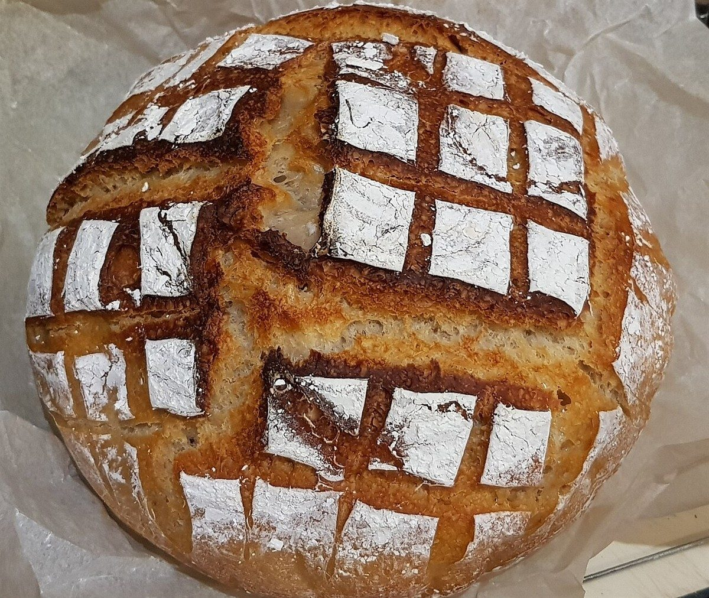

ベーカリー / 兵庫県明石市大蔵町
Tarochieタロッチェ
兵庫県明石市大蔵町にあるベーカリー「Tarochie(タロッチェ)」のご案内ページです。営業時間やメニューなどは準備中。電話番号とInstagramは確認できています。
0

制作側の連想
「タロッチェ」の響きから、カードを思った。
屋号の由来は分かりません。制作側は「タロッチェ」という響きから、占いに使われるカードの名前を連想しました。そこでこのサイトは、0からXIIまでの十三枚のカードをめくるように作っています。お店の理念や由来とは無関係の、制作側の連想です。カードの写真はすべてフリー素材のイメージで、お店のパンではありません。
十三枚の手札
0からXIIまで、パンのカード。
国外または撮影地不明のフリー素材です。お店で扱う商品を示すものではありません。
I

II

III

IV

V

VI

VII

VIII

IX

X

XI

XII

ご案内
お店のこと(確認できたものだけ)
| 所在地 | 〒673-0872 兵庫県明石市大蔵町17-5 |
|---|---|
| 電話 | 078-587-2359 |
| 営業時間 | 準備中 |
| 定休日 | 準備中 |
| ご予約 | 準備中 |
| 駐車場 | 準備中 |
| SNS | Instagram @tarochie914125 |